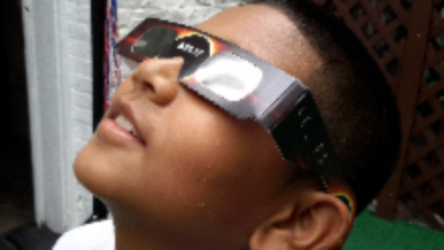

Yes! Think of your eyes at the receiving end of a beam that is being sent from the sun. When an eclipse is taking place, the magnification is greater than on a regular sunny day. If you've ever taken a magnifying glass and focused sunlight through it on to something, without eye protection, that's what's happening when you look directly at the sun during an eclipse. Those sunbeams can burn out your retinas, so don't take the chance even on a normal day!
Fortunately, there are ways of viewing an eclipse that are safe for your eyes. Eclipse safety glasses are inexpensive and easy to purchase online. NASA has a very detailed website on eclipse glass safety. Do not purchase any eclipse viewing glasses without verifying the specifications first. There are also different homemade methods for safe indirect viewing that can be found online that are great for kids to learn about eclipses. And there will be plenty of websites that will be streaming the total eclipse LIVE.
